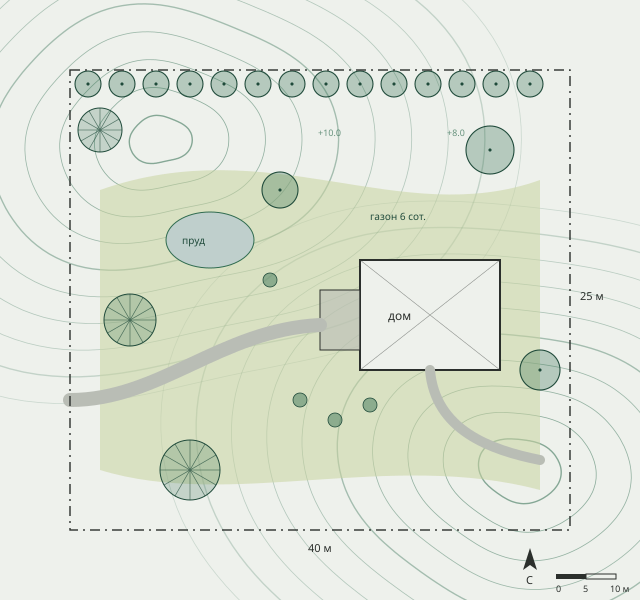
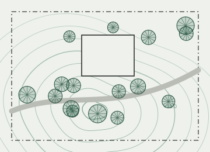
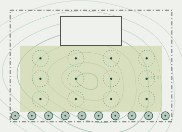
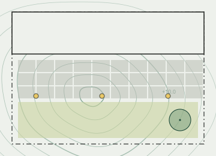

Сады для петербургского климата
Проектируем и благоустраиваем участки в Петербурге и Ленобласти: газон, автополив, дренаж, дорожки и растения, которые переживают нашу зиму.
- 140 участков с 2016 года
- Выезд и замер бесплатно до 50 км от КАД
- Гарантия на растения — год, на мощение — три

Цены
Цены «от» на 2026 год. Точную смету считаем после бесплатного выезда на участок.
- Выезд и замер
- Смотрим грунт, воду и освещённость, обсуждаем пожелания
- бесплатно
- Эскиз-концепция
- Планировка зон и стиль сада, готов за 7 дней
- от 15 000 ₽
- Дизайн-проект
- Генплан, дендроплан, разбивочный чертёж, 3D
- от 2 500 ₽/сотка
- Рулонный газон
- Подготовка основания, грунт, укладка, первый полив
- от 590 ₽/м²
- Автополив
- С контроллером и датчиком дождя, участок до 6 соток
- от 85 000 ₽
- Дренаж
- Если весной и после дождя на участке стоит вода
- от 1 800 ₽/пог. м
- Мощение плиткой
- С основанием из щебня и песка, гарантия 3 года
- от 3 200 ₽/м²
- Уход за садом
- С апреля по октябрь, участок до 10 соток
- от 12 000 ₽/мес
Не нашли свой случай? Консультант подскажет цену и сроки за минуту.
Проекты
Три участка из 140. Подборку под ваш участок пришлёт менеджер.

Лесной сад в Комарово
12 соток. Сохранили сосны, проложили гравийные дорожки, сделали тенистые клумбы.

Участок во Всеволожске
8 соток. Рулонный газон, автополив на 12 зон, живая изгородь из туи.

Двор таунхауса в Мурино
2 сотки. Мощение, газон и садовое освещение вдоль дорожки.
Как работаем
Участок 10 соток под ключ — обычно 3–6 недель после согласования проекта.
Выезд и замер
Бесплатно до 50 км от КАД, около часа на участке.
Эскиз и смета
Планировка зон, растения, фиксированная смета.
Договор
Аванс 30% на материалы, дальше оплата по этапам.
Работы
Газон, полив, дорожки, посадки — бригада из Петербурга.
Уход и гарантия
Год гарантии на растения, абонемент ухода по желанию.
Вопрос в 23:40? Консультант ответит сразу
Он знает цены, сроки и условия «Зелёного контура». Если нужен расчёт для вашего участка, примет заявку, и утром вам позвонит менеджер.